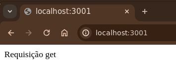
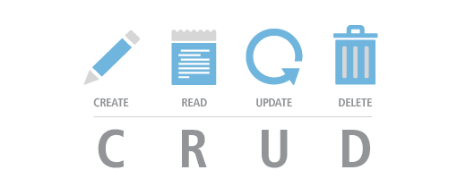
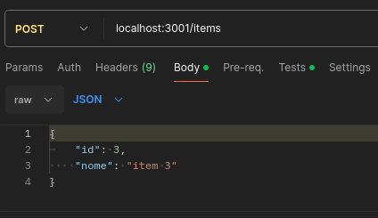
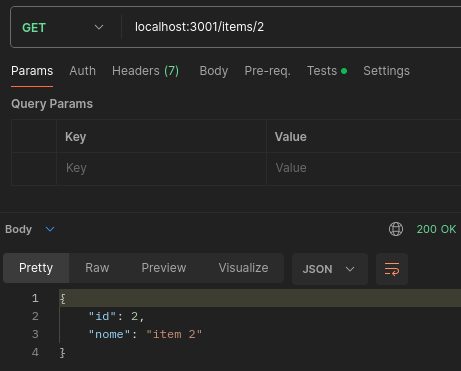
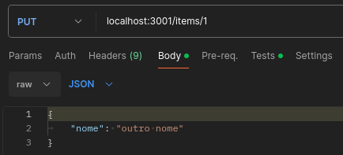
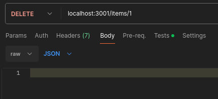

API com Nodejs
Node.js é um ambiente de tempo de execução JavaScript de código aberto e multi plataforma . É uma ferramenta popular para quase qualquer tipo de projeto!
O Node.js executa o mecanismo JavaScript V8, o núcleo do Google Chrome, fora do navegador.
Um aplicativo Node.js é executado em um único processo, sem criar um novo thread para cada solicitação.
O node possibilita criar código para o servidor usando a mesma linguagem(JavaScript) utilizada no lado do cliente.
O nodejs tem utiliza package managers para instalação do node. Além de existir binários para os principais SO's e a opção de compilar o código fonte.
O NVM(Node version manager) é um gerenciador de versões do node, possibilitando a utilização de diversas versões.
Hello World!
- Criar pasta para a api node e entra nela
- mkdir minhaapi
- cd minhaapi
- npm init > seguir default
- indicar nome do entry point >
server.js
Isso vai criar o package.json
- criar o arquivo index.js
- console.log("Hello World");
{
"name": "minhaapi",
"version": "1.0.0",
"description": "projeto TEDII",
"main": "index.js",
"scripts": {
"test": ""
},
"author": "",
"license": "GPL 3.0"
}
Execute o programa com node server.js
NPM
O NPM(Node Package Manager) é uma biblioteca para compartilhar código e um gerenciador de dependências.
{
"name" : "foo",
"version" : "1.2.3",
"description" : "A package",
"main" : "index.js",
"keywords" : ["foo", "fool", "foolish"],
"author" : "John Doe",
"licence" : "ISC"
}
O comando para instalar um package é o --install ele vai fazer download do package e suas dependências na pasta
node_modules, e adicionar esse package no arquivo package.json dentro da propriedade dependencies.
O parâmetro --save-dev vai salvar o package em devDependencies para ser usado apenas no ambiente de desenvolvimento.
O parâmetro --save-optional vai salvar o package em optionalDependencies não sendo exclusivamente necessária para
a execução.
O parâmetro --no-save é auto-explicativo.
Iniciando o projeto
Vamos instalar 3 dependências para o sistema:
- Express:
npm install express --save- Nodemon:
npm install nodemon --save-dev- Cors:
npm install cors --save
Para instalar esse projeto pela primeira vez, ao executar npm install o npm vai instalar todas as dependências que
estiverem salvas no package.json.
{
"name": "detranupf",
"version": "1.0.0",
"description": "projedo TEDII",
"main": "index.js",
"scripts": {
"test": ""
},
"author": "",
"license": "ISC",
"dependencies": {
"cors": "^2.8.5",
"express": "^4.18.2",
"nodemon": "^3.1.0"
}
}
CORS
CORS é uma lib que funciona como um middleware, ele nos permite "relaxar" a segurança aplicada a uma API. Isso é feito contornando os cabeçalhos, que especificam quais podem acessar a API.
- Cross-Origin
- Resource
- SharingAccess-Control-Allow-Origin
- origins
Em outras palavras, o CORS é um recurso de segurança do navegador que restringe solicitações HTTP de origem cruzada com outros servidores e específica quais domínios acessam seus recursos.
Nodemon
Nodemon é uma lib open source criada para habilitar hot reload no código, entre outras funcionalidades:
- reinicialização automática
- detectar extensão de arquivos monitorados
- monitorar pastas e alterações
leon@leon-dev > npm run dev
> detranupf@1.0.0 dev
> nodemon server.js
[nodemon] 3.1.0
[nodemon] to restart, enter `rs`
[nodemon] watching path(s): *.*
[nodemon] watching: js,mjs,cjs,json
[nodemon] starting `node index.js`
Express
Express é um web framework para node. Vamos editar o index.js para utilizar o express.
console.log("Server UP");
const express = require('express');
const app = express();
port = 3001;
app.get('/', (req, res) => {
res.send('Requisição get')
});
app.listen(port, () => {})
Ao acessar localhost:3001

ES Modules
Modularizar a aplicação é uma abordagem para tornar o código mais fácil para leitura e manutenção. Ela consiste em transformar scripts em módulos.
Ele substitui o require de arquivos pela sintaxe import e export.
Primeiro precisamos dizer ao nosso app json que utilizaremos módulos, para isso vamos modificar o package.json
{
"name": "detranupf",
"version": "1.0.0",
"description": "projedo TEDII",
"main": "index.js",
"type": "module",
"scripts": {
"test": ""
},
"author": "",
"license": "ISC",
"dependencies": {
"cors": "^2.8.5",
"express": "^4.18.2",
"nodemon": "^3.1.0"
}
}
import express from "express";
const app = express();
console.log("Server UP");
port = 3001;
app.get('/', (req, res) => {
res.send('Requisição get')
});
app.listen(port, () => {})
CRUD
CRUD(Create, Read, Update, Delete), são as quatro operações básicas de bancos de dados relacionais, porém esse conceito pode ser aplicado a outros tipos de banco de dados.
CRUD's podem ser utilizados para testar software, ou como base para desenvolvimento, criando as estruturas básicas e depois se aprofundando.
As operações são autoexplicativas...
Create: Cria registrosRead: Lista registrosUpdate: Modifica registrosDelete: Deleta registros

List (Read)
Vamos então buscar mais dados da nossa API, criando uma rota chamada items. Vamos criar uma lista em javascript para
retornar utilizando um método get.
Para isso vamos criar uma lista de item em app.js
E vamos criar um método get serializando os items com o json. Vamos setar um status code 200 de sucesso.
E a resposta vai ser algo como:
result
Post (Create)
Agora vamos adicionar um item a nossa lista de items. Para isso precisamos fazer um post declarando que iremos enviar
dados para a API através do body da requisição.
Precisamos também adicionar um middleware ao nosso app, para dar acesso ao express e poder trabalhar com a requisição.
const app = express();
app.use(express.json())
app.post("/items", (req, res) => {
items.push(req.body);
res.status(201).send("Adicionado");
});
Mas precisamos enviar os dados do registro que queremos criar. No body da requisição vamos adiconar os dados.

Aqui app.use(express.json()) temos uma temos aqui uma função executando outra função, isso se chama middleware.
No caso do Express, esses middlewares são utilizados para ter acesso às requisições e às respostas no momento em que
elas estão sendo feitas, e para fazer algumas ações nelas, como exemplo, modificar o objeto ou enviar mais informações.
Aqui express.jsono serve que qualquer requisição cujo corpo é um objeto compatível com JSON, como um objeto com id e título ou um array
de objetos, passará por esse middleware e será convertido e analisado (ou 'parseado') para JSON.
Toda vez que recebemos dados via o corpo(body) em uma requisição, eles chegam convertidos como string. Embora eles tenham o formato JSON, formato de objeto, com pares de chave-valor, eles viajam na conexão HTTP no formato string. Para conseguirmos utilizar os dados como JSON, ou seja, acessar as propriedades deles, precisamos converter essa string novamente para JSON.
Get (Read)
Para buscar a informação adicionada vamos criar um método get
app.get("/items/:id", (req, res) => {
const index = buscaItem(req.params.id);
res.status(200).json(items[index]);
});
Precisamos de uma função para buscar o item na lista.

Update
E para alterar um registro? Precisamos identificar qual registro queremos editar.
app.put("/items/:id", (req, res) => {
const index = buscaItem(req.params.id);
items[index].nome = req.body.nome;
res.status(200).json(items[index]);
});

Delete
Para remover um registro a lógica é muito parecida, precisamos indicar qual registro vai ser removido.
app.delete("/items/:id", (req, res) => {
const index = buscaItem(req.params.id);
items.splice(index, 1);
res.status(200).send("item removido");
});

Estrutura
Vamos organizar melhor nossa aplicação. Crie uma pasta src para organizar melhor o código.
Vamos criar um novo arquivo chamado app.js que vai ter a lógica de rotas e outras atribuições e deixar o index.js
apenas como servidor.

app.js
import express from 'express';
const app = express();
app.get("/", (req, res) => {
res.status(200).send("home");
});
export default app;
index.js
import app from "./src/app.js";
const PORT = 3001;
app.listen(PORT, () => {
console.log("Server UP")
});
Também vamos criar pastas para separar os endpoints e sua lógica, para isso dentro da pasta de código fonte src crie
as pastas controllers e routes. Cada "entidade" ou "feature" do sistema vai ter seu arquivo de controller e rotas.
O controller vai ser responsável por armazenar a lógica de cada endpoint, práticamente todo o código relacionado ao processamento dessa rota.
/* usuarioController.js */
import pool from "../db.js";
export const getUsuarios = (req, res) => {
try {
res.status(200);
} catch (err) {
console.error(err);
res.status(500).json({ message: 'Erro ao listar usuarios' });
}
};
No arquivo de routes(rotas) vamos definir o caminho e qual função do controller vai ser chamado.
/* usuarioRoutes.js */
import express from 'express';
import { getUsuarios } from '../controllers/userController.js';
const router = express.Router();
router.get('/', getUsuarios);
export default router;
E no nosso app vamos chamar os arquivos de rotas.
import express from 'express';
import usuarioRoutes from './routes/usuarioRoutes.js';
const app = express();
app.use("/api/usuarios", usuarioRoutes);
export default app;
Persistência em BD
Vamos utilizar o postgres para fazer a persistência dos dados. Nas máquinas do laboratório utilizamos o usuário
postgres com senha masterkey. Lembre que é necessário subir o serviço do postgres no windows.
Env
Para utilizar credênciais de login em serviços uma prática comum é utilizar variáveis de ambiente para armazenar, login, senha, url entre outras informações sensíveis.
Dotenv é um módulo de dependência zero que carrega variáveis ambiente de
um arquivo .env para process.env., armazenando a configuração no ambiente separadamente do código.
Lib PG
A lib pg, é uma biblioteca para comunicação com o Postgresql.
import pg from 'pg';
import dotenv from 'dotenv/config.js';
const { Pool } = pg;
const dbName = process.env.DB_NAME;
const dbUser = process.env.DB_USER;
const dbHost = process.env.DB_HOST;
const dbPassword = process.env.DB_PASSWORD;
const pool = new Pool({
user: dbUser,
host: dbHost,
database: dbName,
password: dbPassword,
port: 5432
});
export default pool;
O pool de conexão do pg mantém um conjunto de conexões abertas e as reutiliza conforme necessário ele “empresta” uma conexão e a “libera” automaticamente quando a query é concluída.
import pool from "../db.js";
export const getTodasPessoas = async (req, res) => {
const client = await pool.connect();
try {
const result = await client.query('SELECT * FROM Usuarios');
//const jsonData = result.rows.map(row => ({
// id: row.id,
// name: row.name
//}));
res.status(200).json(result.rows);
} catch (err) {
console.error(err);
res.status(500).json({ message: 'Erro ao buscar pessoas' });
} finally {
client.release();
}
};
Refatorando os métodos...
export const getUsuario = async (req, res) => {
try {
const usuarioId = req.params.id;
const client = await pool.connect();
const result = await client.query(`
SELECT * FROM Usuarios WHERE id_usuario = $1
`, [usuarioId]);
res.status(200).json(result.rows);
} catch (err) {
console.error(err);
res.status(500).json({ message: 'Erro ao buscar pessoas' });
}
};
export const deleteUsuario = async (req, res) => {
try {
const usuarioId = req.params.id;
const client = await pool.connect();
const result = await client.query(`
DELETE FROM Usuarios WHERE id_usuario = $1
`, [usuarioId]);
res.status(200).send('usuario deletado');
} catch (err) {
console.error(err);
res.status(500).json({ message: 'Erro ao buscar pessoas' });
}
};
export const postUsuarios = async (req, res) => {
try {
const usuario = req.body;
const client = await pool.connect();
const result = await client.query(`
INSERT INTO Usuarios(id_usuario, nome, email, password)
VALUES ($1, $2, $3, $4) RETURNING *
`, [
usuario.id,
usuario.nome,
usuario.email,
usuario.password
]
);
res.status(201).send('Usuário adicionado com sucesso');
} catch (err) {
console.error(err);
res.status(500).json({ message: 'Erro ao buscar pessoas' });
}
};
export const putUsuario = async (req, res) => {
const id = req.params.id;
const nome = req.body.nome;
const client = await pool.connect();
try {
const result = await client.query(
`UPDATE Usuarios SET nome = $2
WHERE id_usuario = $1
RETURNING *`,
[id, nome]
);
if (result.rows.length === 0) {
return res.status(404).json({ message: 'Usuário não encontrado' });
}
res.json(result.rows);
} catch (err) {
console.error(err);
res.status(400).json({ message: 'Erro ao atualizar usuário' });
}
};